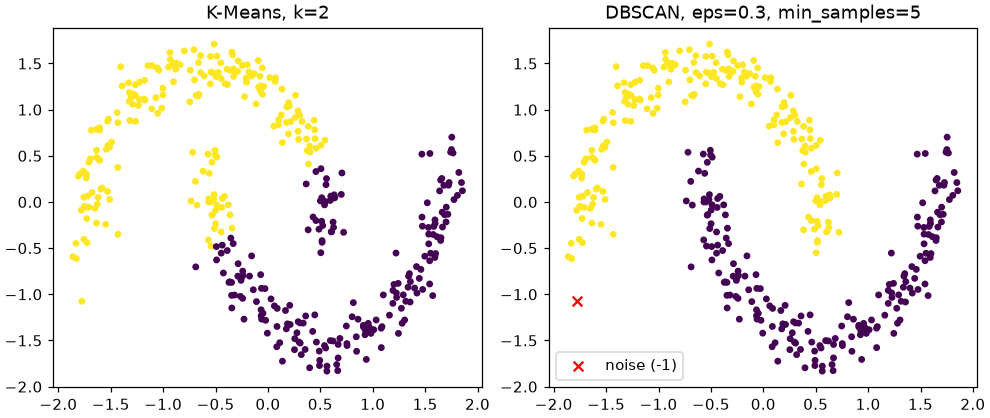
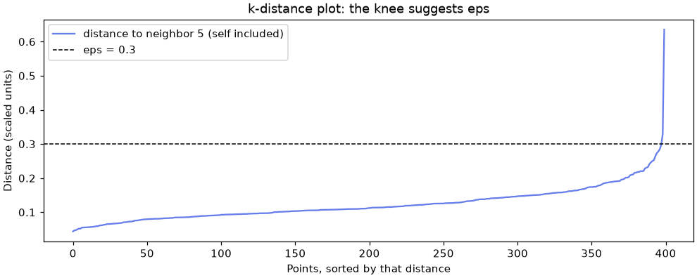
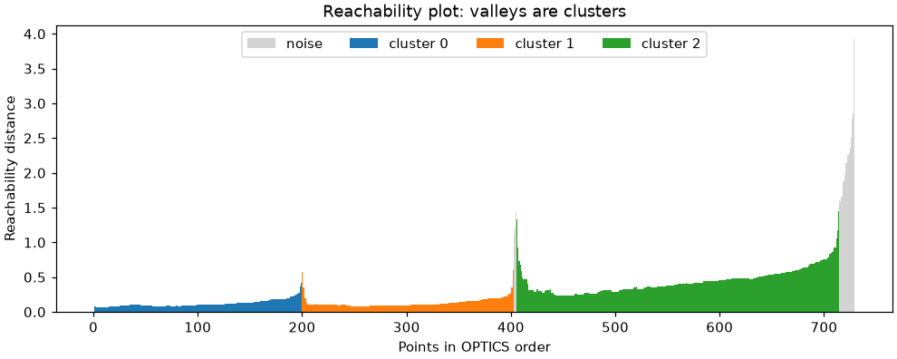
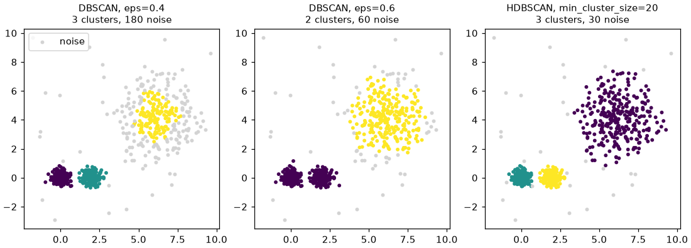

🌃 Lesson 8.4: Density-Based Clustering
Let the data decide how many clusters there are and what shape they take, and get an honest "fits nowhere" label for the points that belong to no group.
🎯 Learning Objectives
By the end of this lesson, you will be able to:
- Explain core, border and noise points, and what
epsandmin_samplescontrol in DBSCAN - Choose a starting
epsfrom a k-distance plot and read the effect of changing it - Read an OPTICS reachability plot and explain why one
epsfails when clusters have different densities - Cluster with
HDBSCAN, count clusters and noise correctly, and profile the result - Judge whether a density-based clustering found real structure or an artifact of the features
In This Lesson
🧭 Clusters as Crowded Places
K-Means and hierarchical clustering share a quiet assumption: every point belongs to some cluster, and clusters are roughly round blobs around a center. Real data often breaks both halves. Groups can be long, curved or irregular, and some points are simply odd ones that belong nowhere. Forcing those points into a cluster drags the cluster's center toward them and muddies its profile.
💡 Mental Model: A City at Night from a Plane
Look down at a region at night. Towns are places where the lights are packed close together; their shapes follow rivers and valleys, not circles. Between the towns are dark fields with a scattered farmhouse here and there. You did not need to be told how many towns there are: you counted the bright patches. And you would not call a lone farmhouse a town.
Density-based clustering works the same way. A cluster is a region where points are crowded together, separated from other clusters by sparser space. Points in the sparse space are labeled noise, with the label -1. The number of clusters comes out of the data instead of going in as a setting.
This lesson covers three related algorithms in sklearn.cluster. DBSCAN is the original and the easiest to reason about. OPTICS runs DBSCAN's idea at every density level at once and draws a picture of the result. HDBSCAN builds on both and picks the clusters that are most stable across density levels; it is the one to reach for in practice.
🤔 Why This Matters
A marketing team that receives "five segments" from K-Means receives every customer assigned somewhere, including the strange ones. A density method answers a different question: where are the tight, well-defined groups, and who does not fit any of them? For Pinecrest the misfits matter, because, as you will see in the project, they churn more than the average customer.
🔵 DBSCAN: Core, Border and Noise
DBSCAN (Density-Based Spatial Clustering of Applications with Noise) needs two settings. eps is a radius: two points closer than eps are neighbors. min_samples is how many points (the point itself included) a neighborhood needs to count as crowded. With those two numbers, every point gets one of three roles:
Core points that are within eps of each other are chained together into one cluster, and each border point joins the cluster of a nearby core point. A cluster can therefore snake along any shape, as long as the crowd never thins out below min_samples per neighborhood.
The classic demonstration is two interleaving half-moons. K-Means cannot separate them, because it can only draw straight boundaries between centers. Scale the features first: eps is a distance, and distances only make sense when the columns are on comparable scales.
import numpy as np
import pandas as pd
import matplotlib.pyplot as plt
from sklearn.datasets import make_moons
from sklearn.preprocessing import StandardScaler
from sklearn.cluster import KMeans, DBSCAN
from sklearn.metrics import adjusted_rand_score
def label_counts(labels):
"""Cluster sizes as a dict; the key -1 is noise."""
return pd.Series(labels).value_counts().sort_index().to_dict()
X_moons, y_moons = make_moons(n_samples=400, noise=0.08, random_state=42)
Z_moons = StandardScaler().fit_transform(X_moons)
km_labels = KMeans(n_clusters=2, n_init=10, random_state=42).fit_predict(Z_moons)
db = DBSCAN(eps=0.3, min_samples=5).fit(Z_moons)
print("K-Means:", label_counts(km_labels), " ARI", round(adjusted_rand_score(y_moons, km_labels), 3))
print("DBSCAN :", label_counts(db.labels_), " ARI", round(adjusted_rand_score(y_moons, db.labels_), 3))Output
K-Means: {0: 200, 1: 200} ARI 0.475
DBSCAN : {-1: 1, 0: 200, 1: 199} ARI 0.995Because this toy data comes with the true moon of every point, you can score each clustering with the adjusted Rand index (ARI) from Lesson 8.2: 1 means the clusters match the truth exactly, 0 means no better than chance. K-Means cuts the moons in half the wrong way (ARI under 0.5). DBSCAN recovers both moons almost perfectly and labels a single stray point as noise. Notice that you never told DBSCAN "two clusters".
fig, axes = plt.subplots(1, 2, figsize=(9, 3.8), layout="constrained")
for ax, labels, title in [(axes[0], km_labels, "K-Means, k=2"), (axes[1], db.labels_, "DBSCAN, eps=0.3, min_samples=5")]:
clustered = labels != -1
ax.scatter(Z_moons[clustered, 0], Z_moons[clustered, 1], c=labels[clustered], cmap="viridis", s=12)
ax.scatter(Z_moons[~clustered, 0], Z_moons[~clustered, 1], c="red", marker="x", s=40, label="noise (-1)")
ax.set_title(title)
axes[1].legend(loc="lower left")
plt.show()
A fitted DBSCAN also tells you which points were core points, through core_sample_indices_. Everything that is clustered but not core is a border point.
is_core = np.zeros(len(Z_moons), dtype=bool)
is_core[db.core_sample_indices_] = True
is_noise = db.labels_ == -1
print("core :", is_core.sum())
print("border:", (~is_core & ~is_noise).sum())
print("noise :", is_noise.sum())Output
core : 398
border: 1
noise : 1🔑 Key Terms
eps: the neighborhood radius. min_samples: the number of points, itself included, that makes a neighborhood dense. Core point: a point with a dense neighborhood. Border point: not dense itself, but within eps of a core point. Noise: neither; scikit-learn gives it the label -1. Density-reachable: connected to a core point through a chain of core points, each within eps of the next.
📏 Choosing eps
eps is the setting that matters most, and it is unforgiving. Too small, and almost nothing is dense enough: the data shatters into crumbs and noise. Too large, and everything is everyone's neighbor: the clusters merge into one. Sweep a few values on the moons to see both failures:
for eps in [0.1, 0.2, 0.3, 0.5, 1.0]:
labels = DBSCAN(eps=eps, min_samples=5).fit_predict(Z_moons)
n_clusters = len(set(labels) - {-1})
print(f"eps={eps:<4} clusters={n_clusters:<3} noise={(labels == -1).sum():<4} ARI={adjusted_rand_score(y_moons, labels):.3f}")Output
eps=0.1 clusters=29 noise=157 ARI=0.031
eps=0.2 clusters=5 noise=5 ARI=0.886
eps=0.3 clusters=2 noise=1 ARI=0.995
eps=0.5 clusters=2 noise=0 ARI=1.000
eps=1.0 clusters=1 noise=0 ARI=0.000At eps=0.1 the moons shatter into 29 crumbs and 157 noise points. At eps=1.0 one giant cluster swallows both moons. The useful range here is roughly 0.3 to 0.5. On real data you cannot compute an ARI (there is no answer key), so you need a way to pick eps from the data alone.
📈 The k-distance plot
For every point, measure the distance to its min_samples-th nearest neighbor, counting the point itself as the first. That distance is the smallest eps that would make the point a core point. Sort those distances and plot them. Points inside clusters have small distances; noise points have large ones. Where the curve bends sharply upward, the "knee", is a sensible starting eps.
from sklearn.neighbors import NearestNeighbors
min_samples = 5
nn = NearestNeighbors(n_neighbors=min_samples).fit(Z_moons)
distances, _ = nn.kneighbors(Z_moons) # column 0 is each point itself, at distance 0
k_dist = np.sort(distances[:, -1])
print("k-distance percentiles (50, 90, 99):", np.percentile(k_dist, [50, 90, 99]).round(3))
print("share that would be core at eps=0.3:", (k_dist <= 0.3).mean())
fig, ax = plt.subplots(figsize=(9, 3.6), layout="constrained")
ax.plot(k_dist, color="#667eea", label=f"distance to neighbor {min_samples} (self included)")
ax.axhline(0.3, color="black", linestyle="--", linewidth=1, label="eps = 0.3")
ax.set_xlabel("Points, sorted by that distance")
ax.set_ylabel("Distance (scaled units)")
ax.set_title("k-distance plot: the knee suggests eps")
ax.legend()
plt.show()Output
k-distance percentiles (50, 90, 99): [0.112 0.186 0.278]
share that would be core at eps=0.3: 0.995
eps just above the bend makes nearly every point a core point.For min_samples, a common rule of thumb is about twice the number of features, and never below 3. Larger values make the method more conservative: fewer, denser clusters and more noise. With thousands of points, values from 10 to 50 are normal. Choose min_samples first, then read eps from that plot, because the k-distance depends on it.
⚠️ The Knee Is a Starting Point
On clean toy data the knee is obvious. On real data it is often a gentle curve, and two people would put it in different places. Treat it as the center of a short sweep: try a few values around it and look at the cluster sizes, the noise share and the profiles. That is still you making a judgment call, which is exactly why the next two algorithms were invented.
🏙️ When Density Varies
Back to the night flight. A big city's suburbs are much less dense than a small town's center, but they are still part of a town. DBSCAN uses one radius for the whole map, so it has to treat "dense" the same everywhere. Build a data set that makes this a problem: two tight groups close together, and one wide, loose group further away, plus a sprinkle of random points.
from sklearn.datasets import make_blobs
rng = np.random.default_rng(42)
X_blobs, y_blobs = make_blobs(n_samples=[200, 200, 300], centers=[[0, 0], [2, 0], [6, 4]],
cluster_std=[0.3, 0.3, 1.3], random_state=42)
X_var = np.vstack([X_blobs, rng.uniform(-3, 10, size=(30, 2))])
y_var = np.concatenate([y_blobs, np.full(30, -1)]) # -1 marks the sprinkled points
for eps in [0.2, 0.4, 0.6, 1.0]:
labels = DBSCAN(eps=eps, min_samples=10).fit_predict(X_var)
print(f"eps={eps:<4} {label_counts(labels)}")Output
eps=0.2 {-1: 361, 0: 189, 1: 180}
eps=0.4 {-1: 180, 0: 199, 1: 202, 2: 149}
eps=0.6 {-1: 60, 0: 403, 1: 267}
eps=1.0 {-1: 20, 0: 403, 1: 307}The true groups have 200, 200 and 300 points. No single eps gets them. With eps at 0.4 or below, the two tight groups are found, but much of the loose group is called noise (all of it at 0.2, half of it at 0.4). With eps at 0.6 or above, the loose group is found, but the two tight groups merge into one cluster of about 400. (These points were not scaled: both columns are already in the same units, which is the one situation where skipping the scaler is fine.)
💡 Why One Radius Cannot Work
The gap between the two tight groups is narrower than the typical spacing inside the loose group. Any radius big enough to connect the loose group's points also bridges that gap. The fix is not a cleverer eps; it is an algorithm that lets "dense" mean different things in different places.
🔭 OPTICS: Every eps at Once
OPTICS (Ordering Points To Identify the Clustering Structure) walks through the data from dense regions outward, always stepping next to the closest unvisited point, and records for each point its reachability distance: roughly, the smallest eps at which it would have been reached from the points already visited. Plot those distances in the visiting order and you get a reachability plot: every cluster is a valley, and the walls between valleys are the sparse gaps between clusters.
from sklearn.cluster import OPTICS
optics = OPTICS(min_samples=10, xi=0.1, min_cluster_size=0.05).fit(X_var)
print("OPTICS:", label_counts(optics.labels_), " ARI", round(adjusted_rand_score(y_var, optics.labels_), 3))
reach = optics.reachability_[optics.ordering_]
ordered_labels = optics.labels_[optics.ordering_]
print("first point's reachability:", reach[0]) # nothing was visited before it
reach = np.where(np.isfinite(reach), reach, np.nan) # leave that bar out of the plot
fig, ax = plt.subplots(figsize=(9, 3.6), layout="constrained")
positions = np.arange(len(reach))
for label in sorted(set(ordered_labels)):
mask = ordered_labels == label
name = "noise" if label == -1 else f"cluster {label}"
ax.bar(positions[mask], reach[mask], width=1.0, label=name, color="lightgray" if label == -1 else None)
ax.set_xlabel("Points in OPTICS order")
ax.set_ylabel("Reachability distance")
ax.set_title("Reachability plot: valleys are clusters")
ax.legend(ncols=4)
plt.show()Output
OPTICS: {-1: 18, 0: 200, 1: 203, 2: 309} ARI 0.959
first point's reachability: inf
eps) could not capture all three.The very first point in the order has an infinite reachability, because no point was visited before it to reach it from; the code turns that value into a gap in the plot. The xi setting tells OPTICS how steep a wall must be to separate two valleys: here a 10% drop in reachability. min_cluster_size=0.05 ignores valleys holding less than 5% of the points, which stops tiny dips from becoming clusters. OPTICS finds all three groups, with an ARI near 0.96.
Running DBSCAN with some eps is the same as drawing a horizontal line across this plot: everything below the line in one valley is one cluster. That is why OPTICS can also give you a DBSCAN-style result for any eps without refitting, with cluster_optics_dbscan (Exercise 2).
⚠️ OPTICS Is Sensitive and Slow
OPTICS has its own knobs: with the default xi=0.05 and no min_cluster_size, this same data comes out as one real cluster and a pile of fragments. It is also slower than DBSCAN on large data. Its real strength is the reachability plot itself, a picture of the density structure that you can read like a dendrogram from Lesson 8.3.
🌳 HDBSCAN: The Practical Default
HDBSCAN (Hierarchical DBSCAN) builds the full hierarchy of clusterings for every possible eps, like a dendrogram, then keeps the clusters that survive longest as the density threshold changes. A cluster that only exists for a narrow range of eps is unstable and is dropped; one that persists is kept. The main setting is the one you can actually reason about: min_cluster_size, the smallest group you would care about.
from sklearn.cluster import HDBSCAN
hdb = HDBSCAN(min_cluster_size=20, copy=True).fit(X_var)
print("HDBSCAN:", label_counts(hdb.labels_), " ARI", round(adjusted_rand_score(y_var, hdb.labels_), 3))
print("membership strength of the first 5 points:", hdb.probabilities_[:5].round(2))Output
HDBSCAN: {-1: 30, 0: 302, 1: 197, 2: 201} ARI 0.95
membership strength of the first 5 points: [1. 0.55 0.36 0.93 0.65]Three clusters of about the right sizes (302, 197 and 201) plus 30 noise points, with no eps to tune. Each clustered point also gets a probabilities_ value between 0 and 1: how firmly it sits in its cluster's dense core (1) or out on the fringe (closer to 0). Noise points get 0.
💡 Why copy=True?
HDBSCAN has a copy setting that decides whether it may modify your input array in place. scikit-learn 1.9 warns that the default is changing from False to True, so pass copy=True to get the safe behavior and a quiet notebook.
The other settings worth knowing: min_samples (defaults to min_cluster_size) controls how conservative the density estimate is, so larger values push more points into noise; cluster_selection_epsilon merges clusters closer than a distance you choose; and cluster_selection_method="leaf" prefers many small, fine-grained clusters over the default "eom" (excess of mass), which prefers fewer, larger ones.
🧰 Which Clustering Method When
fig, axes = plt.subplots(1, 3, figsize=(10, 3.6), layout="constrained")
results = [("DBSCAN, eps=0.4", DBSCAN(eps=0.4, min_samples=10).fit_predict(X_var)),
("DBSCAN, eps=0.6", DBSCAN(eps=0.6, min_samples=10).fit_predict(X_var)),
("HDBSCAN, min_cluster_size=20", hdb.labels_)]
for ax, (title, labels) in zip(axes, results):
clustered = labels != -1
ax.scatter(X_var[clustered, 0], X_var[clustered, 1], c=labels[clustered], cmap="viridis", s=8)
ax.scatter(X_var[~clustered, 0], X_var[~clustered, 1], c="lightgray", s=8, label="noise")
ax.set_title(f"{title}\n{len(set(labels) - {-1})} clusters, {(~clustered).sum()} noise", fontsize=10)
axes[0].legend(loc="upper left")
plt.show()
| Method | You choose | Cluster shape | Noise label | Labels new data? |
|---|---|---|---|---|
| K-Means | k | round, similar size | no | yes, predict |
| Agglomerative | k or a cut height, linkage | depends on linkage | no | no |
| DBSCAN | eps, min_samples | any, one density | yes | no |
| OPTICS | min_samples, xi | any, varying density | yes | no |
| HDBSCAN | min_cluster_size | any, varying density | yes | no |
| Gaussian mixture (8.5) | number of components | ellipses | no (but gives probabilities) | yes, predict |
✅ A Sensible Default
Exploring unlabeled data with irregular groups and possible outliers: start with HDBSCAN and a min_cluster_size that reflects the smallest group you would act on. Need a fixed number of round segments that you can apply to next month's customers: K-Means or a Gaussian mixture. Need a picture of the density structure: OPTICS's reachability plot.
One more practical point: density methods suffer in many dimensions. With dozens of features, distances between points become similar to each other, so "crowded" loses its meaning. Keep the feature set small and meaningful, or reduce dimensions first (Module 9).
⚠️ Common Mistakes
Density-based clustering fails quietly more often than loudly. Most of these produce no error at all.
1. Counting Noise as a Cluster
labels_04 = DBSCAN(eps=0.4, min_samples=10).fit_predict(X_var)
print("len(set(labels)):", len(set(labels_04)))
print("real clusters :", len(set(labels_04) - {-1}))Output (no error, and that is the problem)
len(set(labels)): 4
real clusters : 3What happened: -1 is not a cluster id; it is the noise label. Counting distinct labels adds one phantom cluster whenever there is noise. Fix: remove -1 before counting (len(set(labels) - {-1})), and report the noise count separately. It is a result, not a nuisance.
2. Asking DBSCAN to Label New Points
db.predict(Z_moons[:3])Error
AttributeError: 'DBSCAN' object has no attribute 'predict'What it means: DBSCAN, OPTICS and HDBSCAN describe the data they were fitted on; they have fit_predict but no predict. A new point could even change the clusters (it might bridge two of them). Fix: refit on the new data, or assign new points to the cluster of their nearest clustered neighbor with a k-nearest-neighbors classifier (the stretch exercise), and call them noise when they are too far from everyone.
3. Forgetting to Scale
customers_raw = pd.read_csv("data/customers_churn.csv")
raw = customers_raw[["orders_12m", "avg_order_value", "discount_share", "return_rate"]]
raw_labels = DBSCAN(eps=0.5, min_samples=10).fit_predict(raw)
print("clusters:", len(set(raw_labels) - {-1}), " noise share:", round((raw_labels == -1).mean(), 3))Output (no error, and that is the problem)
clusters: 57 noise share: 0.776What happened: avg_order_value is measured in dollars and discount_share in fractions, so a radius of 0.5 means "within 50 cents of order value" and ignores the share columns almost completely. The result is dozens of tiny clusters and most customers as noise. Fix: scale the features (and consider a log for skewed amounts) before any distance-based method. The only exception is when every column is already in the same units, as in the generated X_var.
4. Scoring a Clustering That Is All Noise
from sklearn.metrics import silhouette_score
tiny_eps = DBSCAN(eps=0.01, min_samples=5).fit_predict(Z_moons)
silhouette_score(Z_moons, tiny_eps)Error
ValueError: Number of labels is 1. Valid values are 2 to n_samples - 1 (inclusive)What it means: with a tiny eps every point is noise, so there is one label and the silhouette is undefined. The quieter version of this mistake is worse: computing a silhouette with the noise points included treats -1 as one big, scattered cluster and drags the score down. Fix: check the label counts first, and score only the clustered points (mask = labels != -1). Remember that the silhouette favors round, well-separated clusters, so it can undersell a correct density-based result such as the moons.
5. Trusting a Cluster That the Features Created
Count features such as orders_12m only take whole values. Thousands of customers with exactly one order sit on the same value, which looks like a very dense ridge to a density method, so it can become a "segment" of its own even when nothing about those customers is special. You will meet this in the project. Fix: profile every cluster, and be suspicious when two clusters differ only in a single integer value. Merge them, or treat the split as an artifact, unless the business has a reason to care about the difference.
🛠️ Project: Core Segments and Misfits
In Lesson 8.2 you segmented Pinecrest's customers with K-Means, which put every customer in a segment. The marketing team now asks two different questions: which segments are tight and well-defined enough to build campaigns around, and which customers do not fit any segment at all? Answer both with density-based clustering on the same four behavior features. Work in a new notebook called lesson_8_4_project. Allow about 45 minutes.
🛠️ Step 1: Load and prepare the features (5 min)
Use the four behavior features: order count, average order value, the share of spend that was discounted, and the share that was returned. Order count and order value are skewed, so take their logs first (every customer has at least one order, so the log is defined). Then scale.
import numpy as np
import pandas as pd
import matplotlib.pyplot as plt
from sklearn.preprocessing import StandardScaler
pd.set_option("display.width", 150)
customers = pd.read_csv("data/customers_churn.csv")
behavior = pd.DataFrame({
"log_orders": np.log(customers["orders_12m"]),
"log_aov": np.log(customers["avg_order_value"]),
"discount_share": customers["discount_share"],
"return_rate": customers["return_rate"],
})
scaler = StandardScaler().set_output(transform="pandas")
Z = scaler.fit_transform(behavior)
print(Z.shape)
print(Z.describe().loc[["mean", "std"]].round(2))Output
(6000, 4)
log_orders log_aov discount_share return_rate
mean -0.0 0.0 -0.0 -0.0
std 1.0 1.0 1.0 1.0There is no train/test split here: clustering has no target to leak, and the goal is to describe these 6,000 customers. The churned column stays out of the features; you will only use it afterwards to profile the clusters.
🛠️ Step 2: Try DBSCAN first (10 min)
Pick min_samples=8 (twice the number of features), look at the k-distances, and sweep eps around them.
from sklearn.neighbors import NearestNeighbors
from sklearn.cluster import DBSCAN
distances, _ = NearestNeighbors(n_neighbors=8).fit(Z).kneighbors(Z)
k_dist = distances[:, -1]
print("k-distance percentiles (50, 80, 95):", np.percentile(k_dist, [50, 80, 95]).round(2))
for eps in [0.3, 0.4, 0.5, 0.6]:
labels = DBSCAN(eps=eps, min_samples=8).fit_predict(Z)
sizes = pd.Series(labels[labels != -1]).value_counts()
print(f"eps={eps}: {len(sizes):2d} clusters, largest {sizes.iloc[0]:5d}, noise {(labels == -1).mean():.1%}")Output
k-distance percentiles (50, 80, 95): [0.28 0.41 0.6 ]
eps=0.3: 19 clusters, largest 1139, noise 31.3%
eps=0.4: 11 clusters, largest 2375, noise 10.8%
eps=0.5: 5 clusters, largest 3876, noise 3.8%
eps=0.6: 2 clusters, largest 5528, noise 1.5%None of these is usable. A small radius leaves almost a third of the customers as noise and produces 19 clusters, many of them tiny. By eps=0.5 one cluster has swallowed almost two-thirds of the customers, and at 0.6 nearly all of them. The k-distance percentiles climb steadily with no sharp knee. Customer segments have different densities, which is the situation where DBSCAN struggles.
🛠️ Step 3: Cluster with HDBSCAN (10 min)
Ask for segments of at least 100 customers (a group smaller than that is not worth a campaign), and set min_samples=25 so that the density estimate looks past small random clumps.
from sklearn.cluster import HDBSCAN
hdb = HDBSCAN(min_cluster_size=100, min_samples=25, copy=True).fit(Z)
customers["cluster"] = hdb.labels_
customers["strength"] = hdb.probabilities_
print("clusters:", len(set(hdb.labels_) - {-1}))
print(customers["cluster"].value_counts().sort_index())
print(f"noise share: {(hdb.labels_ == -1).mean():.1%}")Output
clusters: 7
cluster
-1 1937
0 372
1 389
2 804
3 506
4 350
5 1088
6 554
Name: count, dtype: int64
noise share: 32.3%Seven clusters and about a third of the customers labeled noise. That is a lot of noise, and it is information: a third of Pinecrest's customers do not sit in any dense crowd.
🛠️ Step 4: Profile the clusters (10 min)
Describe each cluster in the original units, and add the churn rate you held back.
profile = customers.groupby("cluster").agg(
customers=("customer_id", "size"),
orders=("orders_12m", "mean"),
order_value=("avg_order_value", "mean"),
discount=("discount_share", "mean"),
returns=("return_rate", "mean"),
churn=("churned", "mean"),
).round(2)
print(profile)
print(f"\noverall churn rate: {customers['churned'].mean():.3f}")Output
customers orders order_value discount returns churn
cluster
-1 1937 5.65 123.94 0.30 0.14 0.20
0 372 1.00 123.72 0.13 0.05 0.26
1 389 3.22 334.34 0.11 0.04 0.12
2 804 2.00 95.10 0.13 0.05 0.17
3 506 2.00 331.59 0.10 0.04 0.17
4 350 6.62 160.54 0.16 0.25 0.07
5 1088 8.82 86.64 0.09 0.03 0.04
6 554 5.34 62.61 0.49 0.06 0.29
overall churn rate: 0.165Read the table like a marketer. Cluster 5 buys often at low value with few discounts (churn 4%): the Trail Regulars of Lesson 8.2. Cluster 6 lives on discounts (about half of spend) and churns at 29%: Deal Hunters. Cluster 4 returns a quarter of what it buys: Gear Testers. Clusters 1 and 3 spend over $330 per order a couple of times a year: Big-Trip Planners. Clusters 0 and 2 are occasional buyers: Casual Campers. The same five segments that K-Means found, now as dense cores.
Now apply Mistake 5. Look at the orders column: cluster 0 averages exactly 1.00 orders, cluster 2 exactly 2.00, cluster 3 exactly 2.00 and cluster 1 just over 3. Those are customers stacked on a single whole-number value of orders_12m, which looks extremely dense. Clusters 1 and 3 have nearly identical profiles apart from the order count, and so do clusters 0 and 2. A sensible reading is five real segments, two of them split by the integer artifact.
🛠️ Step 5: Merge the artifacts and look at the misfits (5 min)
Give the clusters the segment names from Lesson 8.2, merging the two pairs that differ only by the integer order count, and compare the misfits with everyone else.
names = {0: "Casual Campers", 2: "Casual Campers", 1: "Big-Trip Planners", 3: "Big-Trip Planners",
4: "Gear Testers", 5: "Trail Regulars", 6: "Deal Hunters", -1: "misfit"}
customers["segment"] = customers["cluster"].map(names)
summary = customers.groupby("segment").agg(
customers=("customer_id", "size"),
churn=("churned", "mean"),
discount=("discount_share", "mean"),
returns=("return_rate", "mean"),
).sort_values("churn").round(3)
print(summary)Output
customers churn discount returns
segment
Trail Regulars 1088 0.040 0.093 0.032
Gear Testers 350 0.071 0.161 0.253
Big-Trip Planners 895 0.149 0.103 0.039
Casual Campers 1176 0.199 0.129 0.050
misfit 1937 0.203 0.296 0.138
Deal Hunters 554 0.292 0.492 0.061The misfits are about a third of the customer base, churn at about 20% (above the 16.5% average), and carry higher discount and return shares than most segments. They are not a segment in the marketing sense; they are customers who mix behaviors, such as a discount shopper who also returns a lot. A density method shows you they exist instead of quietly spreading them over the five neat groups.
🛠️ Step 6: Draw the map and save the labels (5 min)
Plot two of the four features with the merged segments, misfits in gray, and save the labels for the marketing team.
fig, ax = plt.subplots(figsize=(9, 4.5), layout="constrained")
misfit = customers["segment"] == "misfit"
ax.scatter(customers.loc[misfit, "avg_order_value"], customers.loc[misfit, "discount_share"],
c="lightgray", s=6, label="misfit")
for name, group in customers[~misfit].groupby("segment"):
ax.scatter(group["avg_order_value"], group["discount_share"], s=6, label=name)
ax.set_xscale("log")
ax.set_xlabel("Average order value ($, log scale)")
ax.set_ylabel("Discount share of spend")
ax.set_title("HDBSCAN segments of Pinecrest customers (gray = fits no segment)")
ax.legend(markerscale=3, ncols=2)
plt.show()
out = customers[["customer_id", "segment", "strength"]].round(3)
out.to_csv("customer_density_segments.csv", index=False)
print(len(out), "rows saved;", out["segment"].nunique(), "segment names including misfit")Output
6000 rows saved; 6 segment names including misfit
✅ Project Completion Checklist
- The four behavior features are log-transformed where skewed and scaled, and
churnedis not among them - You tried DBSCAN and can say why no single
epsworked on these customers - HDBSCAN found 7 clusters and labeled about a third of the customers as noise, and you counted clusters without the
-1label - Your profile table shows each cluster's size, behavior and churn rate in original units
- You identified the two cluster pairs that differ only by a whole-number order count and merged them
customer_density_segments.csvholds 6,000 rows with a segment name and membership strength
🏋️ Hands-on Exercises
Exercises 1 and 2 use the generated data from the lesson (Z_moons, X_var); Exercises 3 and 4 continue from the project notebook (Z, customers).
🏋️ Exercise 1: The Other Knob
Keep eps=0.3 on the moons and try min_samples of 3, 5, 10, 20 and 40. Print the number of clusters, the number of noise points and the ARI. Which way does a larger min_samples push the result?
💡 Hint
A larger min_samples asks for a more crowded neighborhood before a point counts as core. What happens to points on the thin tips of each moon?
✅ Solution
for m in [3, 5, 10, 20, 40]:
labels = DBSCAN(eps=0.3, min_samples=m).fit_predict(Z_moons)
print(f"min_samples={m:<3} clusters={len(set(labels) - {-1})} noise={(labels == -1).sum():<4} "
f"ARI={adjusted_rand_score(y_moons, labels):.3f}")Output
min_samples=3 clusters=2 noise=1 ARI=0.995
min_samples=5 clusters=2 noise=1 ARI=0.995
min_samples=10 clusters=2 noise=5 ARI=0.975
min_samples=20 clusters=5 noise=42 ARI=0.544
min_samples=40 clusters=0 noise=400 ARI=0.000Raising min_samples makes DBSCAN stricter: more points become noise. Up to about 10 the two moons survive. At 20 the neighborhoods are no longer crowded enough along parts of each moon, so the moons break into pieces, and at 40 no neighborhood within 0.3 holds 40 points, so every point is noise. eps and min_samples work together: a stricter min_samples needs a larger eps.
🏋️ Exercise 2: Many DBSCANs from One OPTICS Fit
Use cluster_optics_dbscan (from sklearn.cluster) with the fitted optics model to extract DBSCAN-style labels at eps of 0.4 and 0.6 from X_var, without refitting. Compare the label counts with the DBSCAN results from the "When Density Varies" section.
💡 Hint
The function takes reachability=optics.reachability_, core_distances=optics.core_distances_, ordering=optics.ordering_ and eps=....
✅ Solution
from sklearn.cluster import cluster_optics_dbscan
for eps in [0.4, 0.6]:
cut = cluster_optics_dbscan(reachability=optics.reachability_, core_distances=optics.core_distances_,
ordering=optics.ordering_, eps=eps)
print(f"OPTICS cut eps={eps}: {label_counts(cut)}")
print(f"DBSCAN eps={eps}: {label_counts(DBSCAN(eps=eps, min_samples=10).fit_predict(X_var))}")Output
OPTICS cut eps=0.4: {-1: 182, 0: 199, 1: 202, 2: 147}
DBSCAN eps=0.4: {-1: 180, 0: 199, 1: 202, 2: 149}
OPTICS cut eps=0.6: {-1: 62, 0: 403, 1: 265}
DBSCAN eps=0.6: {-1: 60, 0: 403, 1: 267}The cuts reproduce DBSCAN's results almost exactly (a few border points can land differently, because a border point within reach of two clusters can go either way). One OPTICS fit is a whole family of DBSCAN results: each eps is a horizontal line across the reachability plot.
🏋️ Exercise 3: How Big Is a Segment?
Refit HDBSCAN on the project's Z with min_samples=25 and min_cluster_size of 50, 100, 400 and 1000. For each, print the number of clusters and the noise share. Which settings give an answer you could present, and what does that tell you about how much the result depends on this choice?
💡 Hint
Loop over the sizes and reuse the counting pattern from Step 3. Pass copy=True each time.
✅ Solution
for size in [50, 100, 400, 1000]:
labels = HDBSCAN(min_cluster_size=size, min_samples=25, copy=True).fit_predict(Z)
print(f"min_cluster_size={size:<5} clusters={len(set(labels) - {-1})} noise={(labels == -1).mean():.1%}")Output
min_cluster_size=50 clusters=7 noise=32.3%
min_cluster_size=100 clusters=7 noise=32.3%
min_cluster_size=400 clusters=3 noise=31.8%
min_cluster_size=1000 clusters=2 noise=24.1%50 and 100 give the same seven clusters and the same noise, which is reassuring: the structure does not hinge on the exact number. At 400, groups such as the 350 high-return customers are no longer allowed to stand alone, so they merge or dissolve and only three clusters remain; at 1000, two coarse clusters tell you little. Pick the size from the business question (the smallest group worth a campaign), then check that nearby values give the same answer. Stability across reasonable settings is one of the best checks you have when there is no answer key.
🏋️ Exercise 4: Labeling New Customers (Stretch)
HDBSCAN cannot predict. Build a workaround: train a KNeighborsClassifier(n_neighbors=15) on the clustered customers only (features Z, target segment), and call a customer a misfit if the distance to their nearest clustered customer is larger than the 95th percentile of that distance among the clustered customers themselves. Test it on the first five customers, and check how often it agrees with HDBSCAN's own labels on all 6,000.
💡 Hint
knn.kneighbors(X, n_neighbors=2) on the training points returns each point itself first, so use the second column for the "nearest other clustered customer" distance. For new customers, use n_neighbors=1.
✅ Solution
from sklearn.neighbors import KNeighborsClassifier
clustered = customers["segment"] != "misfit"
knn = KNeighborsClassifier(n_neighbors=15).fit(Z[clustered], customers.loc[clustered, "segment"])
own_dist, _ = knn.kneighbors(Z[clustered], n_neighbors=2)
cutoff = np.percentile(own_dist[:, 1], 95)
def assign_segment(rows):
dist, _ = knn.kneighbors(rows, n_neighbors=1)
return np.where(dist[:, 0] > cutoff, "misfit", knn.predict(rows))
print(f"distance cutoff: {cutoff:.3f}")
print(pd.DataFrame({"hdbscan": customers["segment"][:5], "assigned": assign_segment(Z[:5])}))
matches = pd.Series(assign_segment(Z) == customers["segment"].to_numpy(), index=customers.index)
print(f"agreement, clustered customers: {matches[clustered].mean():.1%}")
print(f"agreement, misfits : {matches[~clustered].mean():.1%}")Output
distance cutoff: 0.244
hdbscan assigned
0 misfit misfit
1 Trail Regulars Trail Regulars
2 Big-Trip Planners Big-Trip Planners
3 misfit misfit
4 Trail Regulars Trail Regulars
agreement, clustered customers: 100.0%
agreement, misfits : 86.9%Clustered customers get their own segment back every time. The misfits are the weak spot: most are recognized, but some sit close enough to a clustered customer that the rule pulls them into a segment. That is the honest limit of the workaround, and the cutoff is one more judgment call. For scoring new customers every month, either refit the density model on the new population or use a model that has a real predict (K-Means or the Gaussian mixture in the next lesson) for the segment and a separate outlier detector (Lesson 8.6) for the misfits.
🎯 Quick Quiz
🎯 Check Your Understanding
Question 1: What does this print?
quiz_points = np.array([[0.0], [0.1], [0.2], [5.0]])
print(DBSCAN(eps=0.15, min_samples=2).fit_predict(quiz_points))Question 2: You run DBSCAN and get one giant cluster containing 97% of the points. What is the most likely fix?
Question 3: Your data has a few very tight groups and one wide, loose group. Which method is the best first choice?
Question 4: In an OPTICS reachability plot, what does a wide valley sitting higher than two narrow, deep valleys tell you?
Question 5: HDBSCAN returns two customer clusters with almost identical profiles, except that one has exactly 1 order per customer and the other exactly 2. What is the best interpretation?
❓ Common Questions at This Stage
Is a third of my customers as "noise" a failure?
Not necessarily. Noise means "not in a dense crowd", and customer behavior is often a continuum with a few dense cores. A high noise share tells you that a large part of the population is not well described by any segment, which is useful to know before a marketing team builds five campaigns. If you need every customer assigned, use the noise label as its own group or assign misfits with a nearest-neighbor rule, and say so.
Can I use DBSCAN for outlier detection?
Yes, the noise points are a crude outlier detector, and it is a fine first look. Its limits are that it gives a yes or no instead of a score, it cannot score new points, and the answer depends on eps. Lesson 8.6 covers detectors built for the job (Isolation Forest, Local Outlier Factor) that give a score for every point, including new ones.
Why not just use the silhouette score to pick eps?
The silhouette rewards compact, round, well-separated clusters, which is K-Means' idea of a good clustering. It can rate the correct moons clustering worse than a wrong one, and it has no sensible way to treat noise. Use it as one signal among several, computed on the clustered points only, alongside cluster sizes, noise share, stability across settings and whether the profiles make sense.
Do these methods work with distances other than Euclidean?
Yes. All three take a metric argument (for example "manhattan" or "cosine"), and DBSCAN and HDBSCAN accept metric="precomputed" with a distance matrix you computed yourself, for example a geographic distance between store locations. The density ideas do not care how distance is measured, only that it is meaningful.
🌟 Going Further: Bonus Challenge
The order-count artifact came from whole numbers. Try two fixes and compare: (a) replace log_orders with log(spend_12m), a continuous column that carries similar information, and (b) keep log_orders but use cluster_selection_method="leaf" and a larger cluster_selection_epsilon such as 0.3. Which version gives clusters you would be happier to present? Write down how you decided, since there is no answer key.
📓 Learning Journal
Take five minutes to write in your learning journal (the journal.md file you started in Lesson 0.1, or a paper notebook). Jot down:
- Key concepts you learned today
- Techniques that clicked (and the ones that have not, yet)
- Questions or confusion to come back to
- Ideas to try on your own
- Progress and feelings: how did this lesson go for you?
✍️ This lesson's prompt: Explain core, border and noise points with the city-at-night picture. Then write two sentences for Pinecrest's marketing lead about the misfit customers: how many there are, how they behave, and why "they fit no segment" is a finding rather than a failure. Finally, note one decision in this lesson that was a judgment call rather than a calculation.
📝 Lesson Summary
🎓 Key Takeaways
- Density-based clustering defines clusters as crowded regions separated by sparse space; points in sparse space are noise, labeled
-1 - DBSCAN uses a radius
epsand a crowd sizemin_samples; points are core, border or noise, and the number of clusters comes out of the data - The k-distance plot suggests a starting
eps, but one radius fails when clusters have different densities - OPTICS orders points by reachability; its plot shows clusters as valleys and is a family of DBSCAN results in one picture
- HDBSCAN keeps the clusters that are stable across densities and needs mainly
min_cluster_size; it is the practical default (passcopy=True) - Count clusters without
-1, scale features first, and remember these models have nopredict - Profile every cluster: whole-number features can create dense ridges that look like segments
🏆 What You've Accomplished
- You separated two half-moons that K-Means could not, without telling the algorithm how many clusters to find
- You chose
epsfrom a k-distance plot and saw both ways it can fail - You read a reachability plot and explained why varying density defeats a single radius
- You found Pinecrest's dense customer segments with HDBSCAN, spotted and merged an artifact, and quantified the misfits
- You saved segment labels with membership strengths that a marketing team can use
🔭 Looking Ahead
In Lesson 8.5: Gaussian Mixture Models you will trade hard labels for probabilities. Instead of "this customer is in segment 3 or is noise", a Gaussian mixture says "70% Trail Regular, 30% Deal Hunter", fits elliptical clusters, and can predict for new customers. It is also a density model, which sets up anomaly detection in Lesson 8.6.
📋 Before the Next Lesson
- Keep
customer_density_segments.csv: you will compare it with the Gaussian mixture segments. - Look at a handful of misfit customers in the raw data. Can you describe, in plain words, why each one fits no segment?
- Re-read the K-Means objective from Lesson 8.1: what shape of cluster does "distance to the nearest center" assume?
🌱 Encouragement for the Journey
Clustering has no answer key, and this lesson asked you to make several judgment calls: a radius, a minimum segment size, which clusters were artifacts. If that felt uncomfortable, good: that discomfort is what careful unsupervised learning feels like. You checked stability, profiled every group and refused to trust a cluster just because an algorithm produced it. That habit is worth more than any single algorithm.